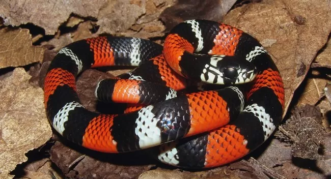

Cobra Coral Falsa
Nome científico: (Erythrolamprus aesculapii Linnaeus, 1758)
Nome comum: Cobra Coral Falsa.
Classificação biológica:
Domínio: Eukaryota.
Reino: Animalia.
Filo: Chordata.
Classe: Reptilia.
Ordem: Squamata.
Família: Colubridae.
Gênero: Erythrolamprus.
Espécie: Erythrolamprus aesculapii.
Nutrição: Carnívora.
Hábitos alimentares: Alimenta-se principalmente de pequenos anfíbios, lagartos e outras serpentes. Pode consumir também pequenos roedores.
Morfologia do corpo: Possui corpo delgado e alongado, com coloração vibrante em padrões vermelhos, pretos e brancos, imitando a cobra coral verdadeira. Pode medir entre 50 cm e 1 metro de comprimento.
Comportamento: É uma espécie terrestre e diurna, geralmente encontrada em áreas abertas e matas secundárias. Não é peçonhenta, utilizando sua coloração para enganar predadores.
Principais Presas: Pequenos anfíbios, lagartos, serpentes menores e roedores.
Principais Predadores: Aves de rapina, mamíferos carnívoros e serpentes maiores.
Locais habitados
Distribuição: Ocorre em diversas regiões da América do Sul, incluindo Brasil, Bolívia, Paraguai e Argentina.

Habitat: Habita florestas tropicais, cerrados, campos e até áreas urbanizadas, sendo comum em locais úmidos e perto de cursos d'água.
Reprodução: Ovípara, com fêmeas depositando entre 5 e 10 ovos por ninhada. Os filhotes nascem após um período de incubação de aproximadamente 60 dias.